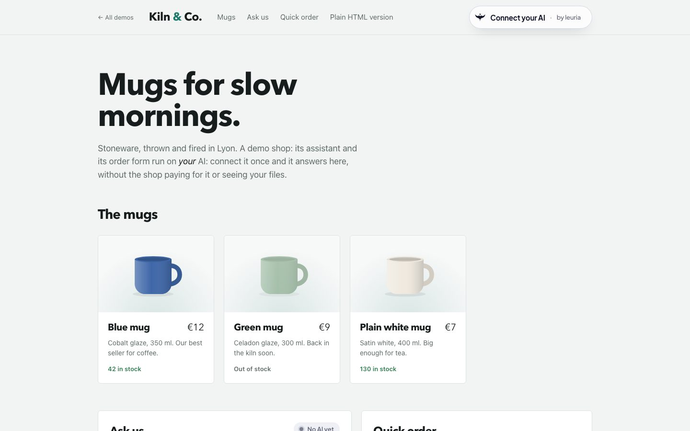
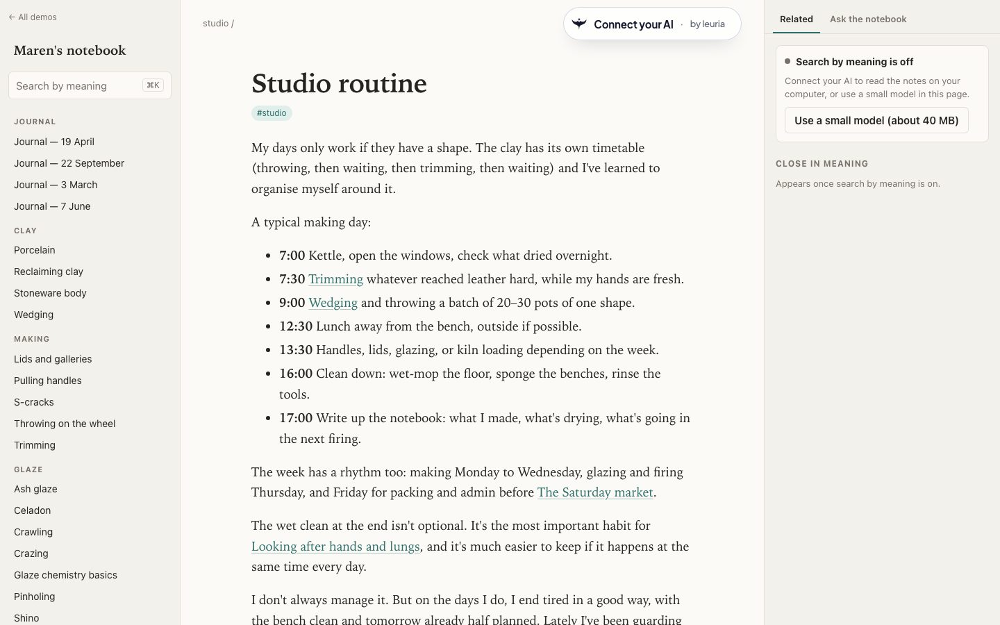
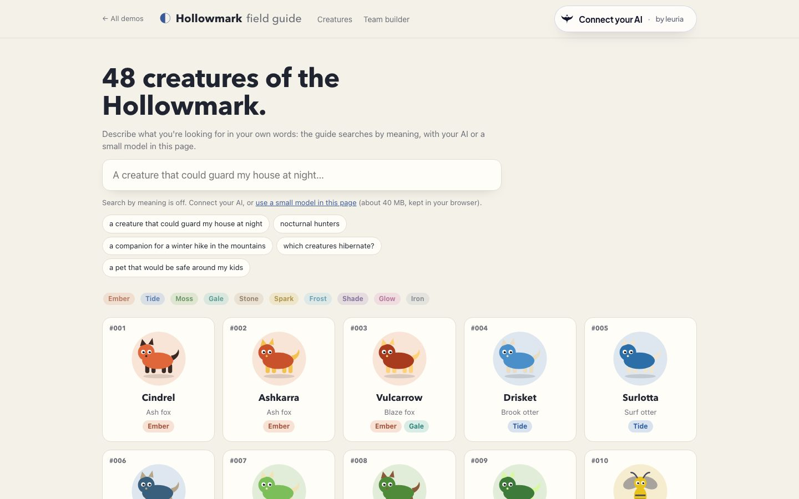
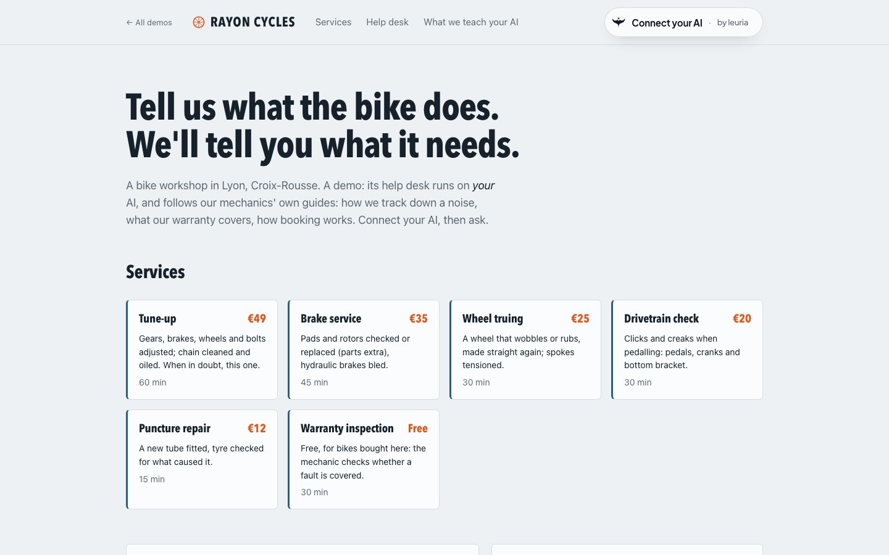
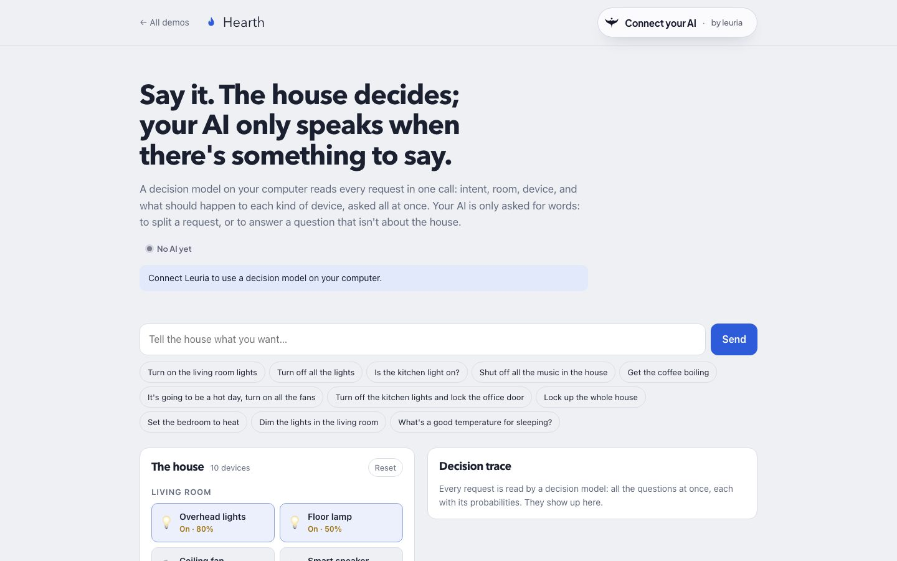

Kiln & Co.
A shop whose assistant sells from the page's own stock.
Kiln & Co. sells three mugs. Ask which one is cheapest, or how many blue ones are left: the AI calls the page's own functions and answers from what they return, never from guesswork. A free-text message fills the order form.
Connect button · Page tools · Structured output · Also in plain HTML
Open Kiln & Co.
Maren's notebook
A notebook you search by meaning, on your own machine.
Maren's notebook, a potter's digital garden. Search “a glaze that looks like jade” and find celadon; see notes related in meaning; ask a question and get an answer with links to the notes it came from. The index is built in your browser with your own embedding model.
Search by meaning · Related notes · Answers with sources
Open the notebook
Hollowmark
A field guide to 48 creatures that never existed.
Hollowmark. Describe one in your own words to find it, see the ones most like it, and have the AI build a team for a trip or an opponent, from the guide's own entries.
Search by meaning · Similar entries · Team builder
Open Hollowmark
Rayon Cycles
A workshop whose help desk follows the mechanics' own guides.
Rayon Cycles. Tell the help desk what the bike does and it works through the workshop's skills: how they track down a noise, what the warranty covers, how booking works. A repair is booked only when you confirm it yourself.
Skills · Page tools · Bookings you confirm
Open Rayon Cycles
Hearth
A house that decides before anyone speaks.
Hearth. Say “turn off the kitchen lights and lock the office door”: a decision model on your computer reads it in one call, twelve questions at once, each with its probability. Your AI only speaks to split a request or to answer something that isn't about the house.
Decisions · Decision trace · Chat only for words
Open Hearth